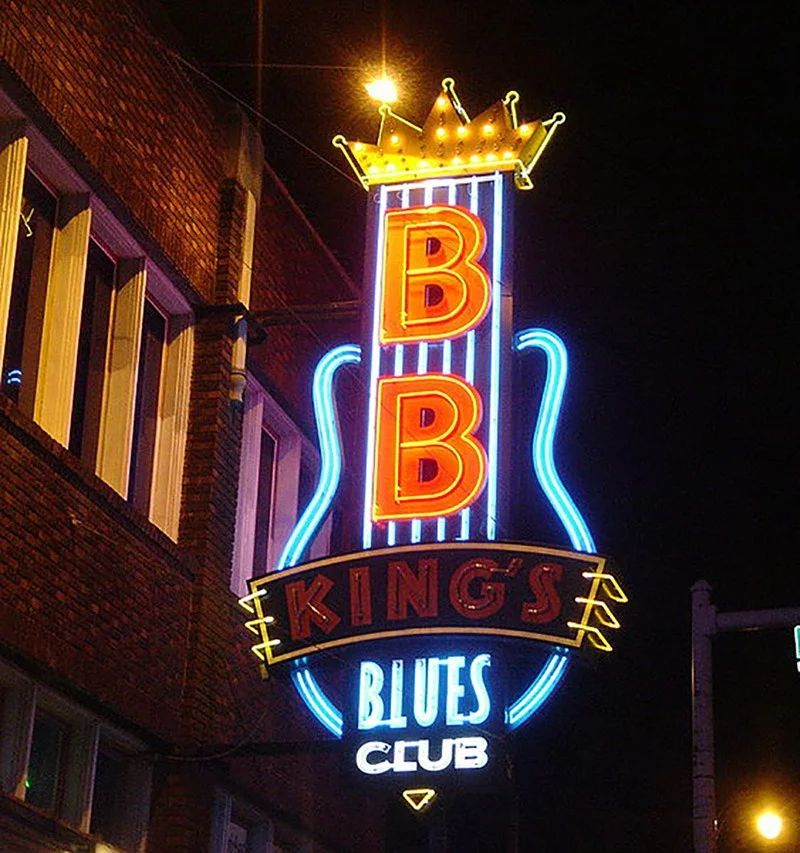
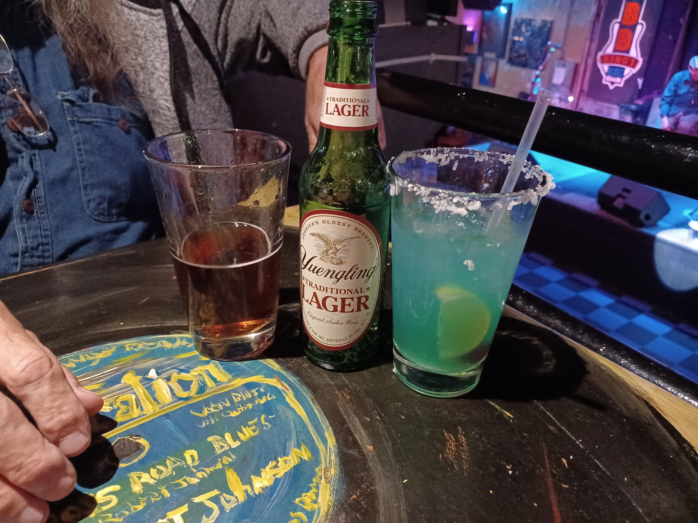

ast
Night On The Road
ast
Night On The RoadDay 22 Sunday Nov 13 76 miles
Memphis
Southland Casino in West Memphis, Mo
Cracker Barrell in West Memphis
BB Kings on Beale Street, Dinner and Music
Shopping on Beale Street
Last Day In Memphis
We started our day with breakfast at Cracker Barrel. It was great. We love Cracker Barrel.
Next stop, Casino in West Memphis, Missouri.
The Casino is very nice. We have never stayed at the hotel, but it looks nice. Someday, we might.
We looked around and played some slots for about an hour. We were up 20 bucks and figured we made out like bandits. So we left and went back to the room to rest up, before going downtown to B.B. Kings.

BB King’s Blues Club
The legendary BB King opened his first blues club in Memphis. There’s a bunch of them all over now. BB King’s is a little more upscale than the Blues City Cafe, but still has the atmosphere of a serious blues club. The food and drink is excellent, as is the entertainment.
Diversity was the band playing that night. They are wonderful, playing an assortment of blues, R&B, rock and more. We had a wonderful, upstairs table, right in front of the stage. Our dinners and drinks were great. It was a great night.

L
ast
Night On The Road
After having our fill of alcohol, food and great music, we headed back down south to our room at The Graceland Days Inn. Then, to bed. Going home tomorrow.